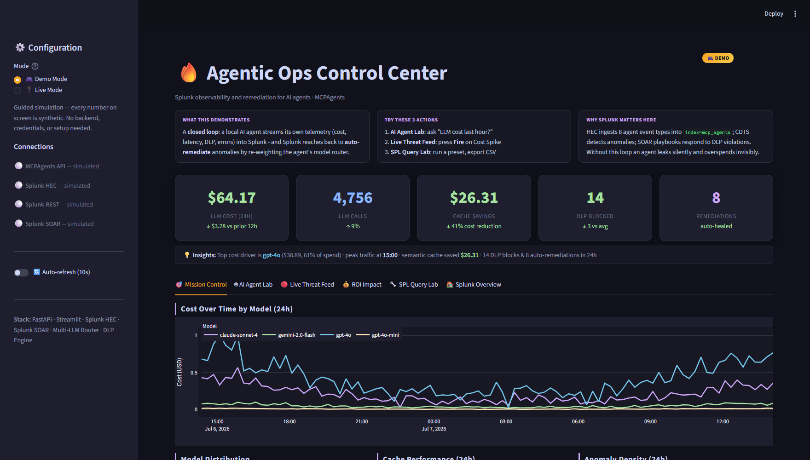

AI agents are being handed the keys to company data — but they don't know what a data engineer knows: which datasets are outdated, restricted, or unreliable. They act confidently and blindly.AI 에이전트에게 회사 데이터 접근 권한이 주어지고 있지만, 정작 데이터 담당자가 아는 것 — 어떤 데이터가 낡았는지, 제한적인지, 믿을 수 없는지 — 은 모릅니다. 그래서 자신 있게, 그러나 눈먼 채로 움직입니다.
Before the agent uses any dataset, it asks a “library catalog” (DataHub): who owns this, is it deprecated, is the quality good? If the data is risky, the agent refuses and names who to contact. And every time it flags a problem, it writes a note back into the catalog — so there's always a record of what the AI did and why.에이전트가 데이터를 쓰기 전에 ‘도서관 카탈로그’(DataHub)에 물어봅니다: 이 데이터 주인이 누구인지, 폐기된 건 아닌지, 품질은 괜찮은지. 위험하면 사용을 거부하고 담당자를 알려줍니다. 그리고 문제를 발견할 때마다 카탈로그에 기록을 남깁니다 — AI가 무엇을 왜 했는지 항상 추적 가능하게.
In regulated settings you must be able to prove what the AI accessed and why. This makes the catalog itself the audit trail.규제 환경에서는 AI가 무엇에 접근했고 왜 그랬는지 증명할 수 있어야 합니다. 이 프로젝트는 카탈로그 자체를 감사 기록으로 만듭니다.